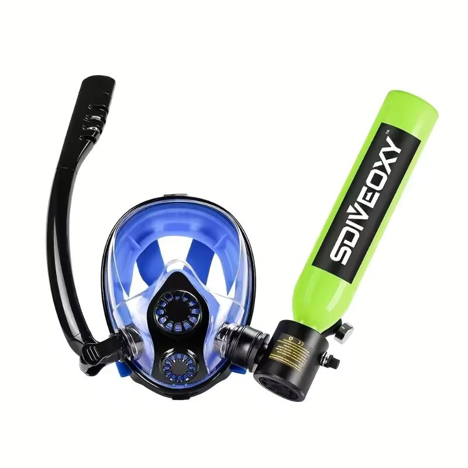
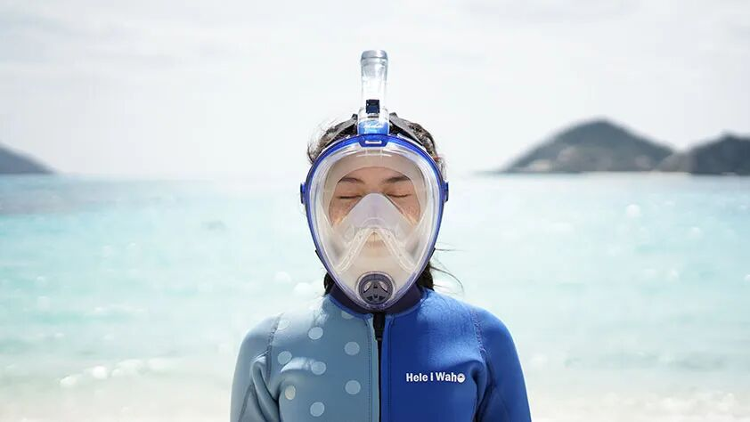
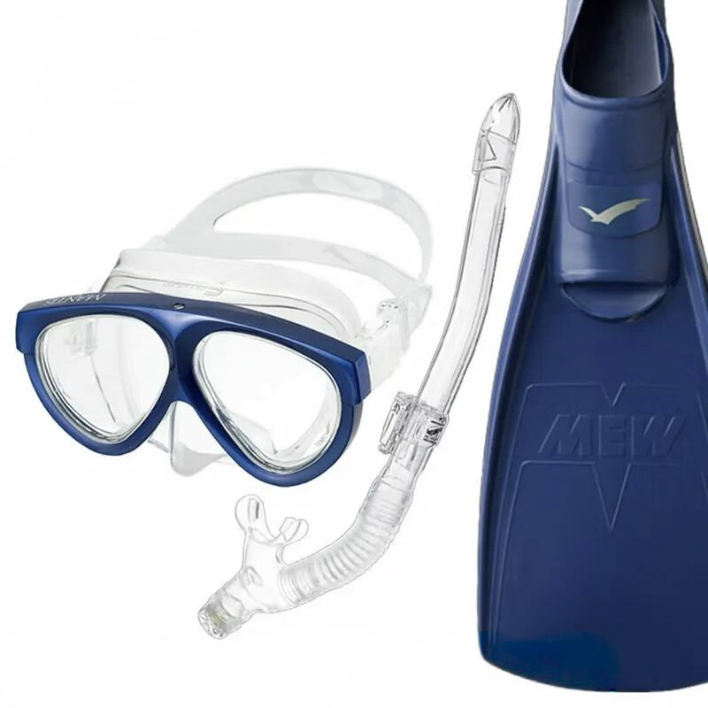

The road Orz passed by 2026 年 05 月
05 月 03 日 ( 日 )
Dive #153 「息継ぎなしで潜れるマスク」は本当に安全？
〜 スノーケリング初心者の方へ知ってほしいこと 〜
最近、「水中で息継ぎなしで長く潜れる」「講習不要で使える」といった宣伝のダイビング系アイテムを見かけることが増えました。とても魅力的に見えますが、結論から言うと、ダイビング初心者の方にはお勧めできません。ダイビング初心者にお勧めできないのですから一般のスノーケラーにはまったくお勧めできません。
ここでは、その理由をできるだけわかりやすく説明します。
① 小型エアボトル付きマスクの問題点
一見すると便利そうな画像のような「小型エアボトル付きマスク」ですが、実際には簡易的なスクーバダイビング装置です。

● なぜ危険なのか
- 1. 空気がなくなったときの対処が難しい
-
普通のスノーケリングでは、水面に顔を出せば呼吸できます。しかしこの装置では、水中で呼吸を続けるため、空気が切れた瞬間に緊急対応が必要になります。
- 2. 間違った浮上が重大事故につながる
-
水中で吸った空気は圧縮されています。そのため、息を止めたまま浮上すると肺に大きなダメージが出る可能性があります。これは深い場所だけでなく、浅い水深でも起こりうる現象です。
- 3. 講習なしでは対応できない
-
ダイビングでは、万が一に備えて「ゆっくり息を吐きながら浮上する」といった技術を必ずインストラクターの管理下で練習します。こうした知識や訓練なしに使うのは非常に危険です。
③ フルフェイス型スノーケルマスクの問題点
画像のような顔全体を覆うタイプのスノーケルマスクも人気ですが、こちらにも注意点があります。

● 主なリスク
- 1. 二酸化炭素がたまりやすい
-
構造上、吐いた息の一部を再び吸ってしまいやすく、気分が悪くなったり、パニックを起こす原因になります。
- 2. 呼吸がしづらい
-
通常のスノーケルに比べて空気の通りが悪く、息苦しさ → 焦り → トラブルにつながることがあります。
- 3. 水が入ったときの対処が難しい
-
通常のマスクやスノーケルは、水が入っても自分で排出できます。しかしフルフェイス型は、トラブル時のリカバリーが難しい構造です。
- 4. 外しにくい・パニックになりやすい
-
顔全体を覆うため、圧迫感や不安感を感じやすく、予期せぬパニックの引き金になることがあります。
③ なぜ昔ながらの「3点セット」が安全なのか
図のようなマスク・スノーケル・フィンの「3点セット」は古くから使われていますが、これは単なる伝統ではなく、安全性が高い設計だからです。

● 安全な理由
- 口で呼吸するため、すぐに外して呼吸できる
- 水が入っても自分で排出できる
- 構造がシンプルでトラブルが少ない
- 異常を感じたらすぐ中止できる
つまり、「何かあっても自分で対処できる」構造になっています。
④ スノーケリングで本当に大事なこと
道具以上に重要なのは、基本的なスキルと意識です。特に初心者の方は、次の点を意識してください。
- 落ち着いて呼吸する
- 水が入ったときに対処できる（マスク・スノーケル）
- 無理をしない
- 海の状況（波・流れ）を確認する
- 少しでも不安を感じたらやめる
そして何より重要なのが、
👉 浮力の確保（ライフジャケットの着用）
です。可能であればウェットスーツも着用してください。
⑤ まとめ
- 「簡単・長時間・講習不要」をうたう装備ほど注意が必要
- 水中で呼吸する装置は、本来きちんとした訓練が必要
- 初心者ほどシンプルで安全な装備を選ぶべき
最後に
少し厳しく聞こえるかもしれませんが、「便利そうに見えるものほど、初心者にとって危険」というのが水中活動の道具の特徴です。安全に楽しむためには、派手な新製品よりも、実績のあるシンプルな道具と基本スキルを選んでください。
個人の経験としていえるのは、問題なく使えているケースがある一方で、やはり初心者や不慣れな環境ではリスクが顕在化しやすい装備です。
- Category :
- #Records of Orz's Road
- #スノーケリング
- #シュノーケリング
- #スノーケル
- #シュノーケル